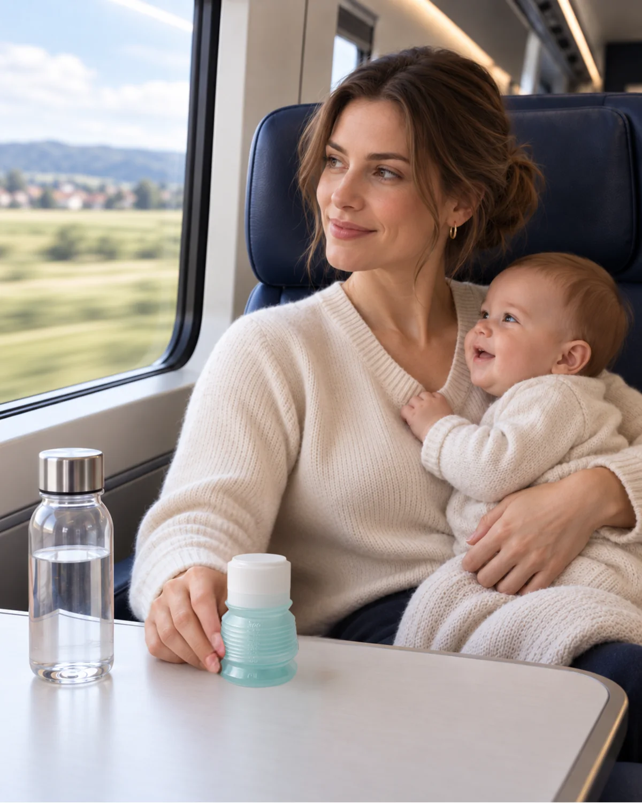
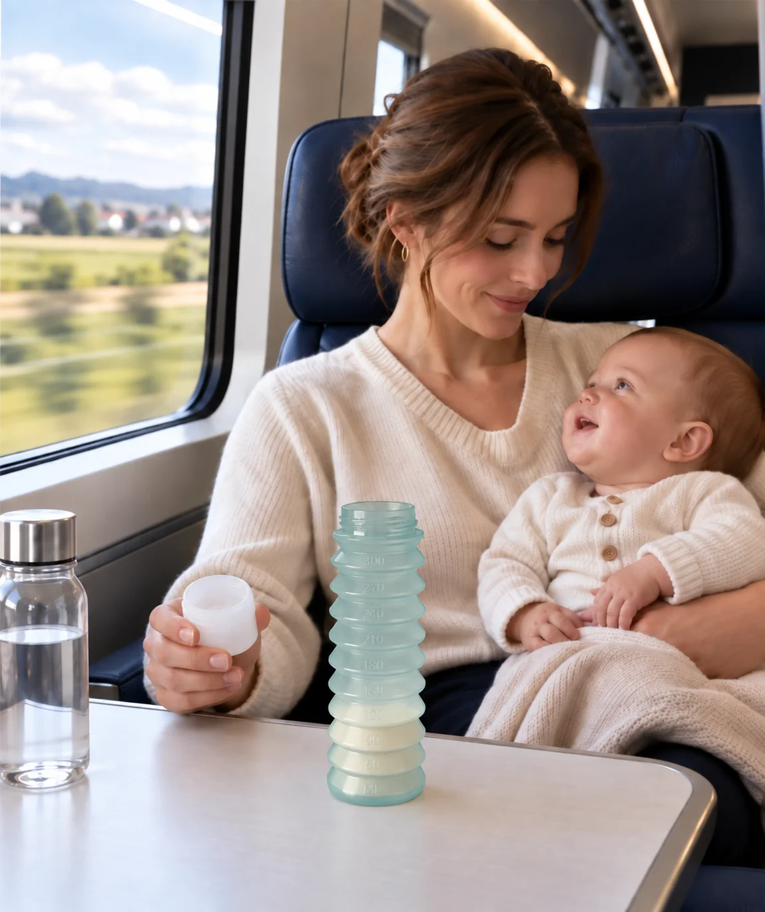

Voyager avec bébé :Il tient dans une poche.
Un biberon et sa dose de lait en poudre réunis en un seul objet.
9,5 cm replié. Environ 35 g, tétine et capuchon compris.
Préparé avant de partir. Prêt au moment du repas.
Pré-dosez le lait en poudre à la maison et emportez l’eau séparément. Sur place, déployez BIBEON et préparez le lait en suivant les trois gestes du mode d’emploi.
Un biberon nomade, où que vous alliez.
En voiture, en train, en avion ou au grand air, le repas reste pré-dosé jusqu’au moment de le préparer.

En voiture
Préparez toujours le biberon à l’arrêt, sur un support propre et stable.
Les repas pré-dosés restent rangés jusqu’à la prochaine pause.


En train ou en bus
Peu de place pour préparer. Peu de pièces à manipuler.
Dévissez le bloc, posez-le à l’envers, puis ajoutez l’eau.

En avion
Le lait en poudre est généralement autorisé en cabine. Emportez une eau adaptée ou procurez-vous-en après les contrôles.
Les règles pouvant varier, vérifiez celles de l’aéroport, de la compagnie et du pays de destination avant le départ.

À la plage ou en plein air
Gardez la poudre, l’eau et le biberon à l’abri du soleil, de la chaleur, du sable et des éclaboussures.
Préparez le repas sur un support propre, juste avant la tétée.
Et pour tous les autres départs.
Le camping, le van, le road-trip
Peu de place, peu de vaisselle : il se replie une fois vide.
La randonnée et la montagne
Le repas pèse le poids de sa poudre, et prend le volume d’un petit pot.
La ville, la poussette, le restaurant
Une course d’une heure sans le sac à langer. Au restaurant, un verre d’eau suffit.
Parcs, zoos, musées, événements
Files d’attente, sacs contrôlés : le biberon préparé d’avance ne dépend de rien sur place.
Le ferry et la croisière
Trois biberons dosés tiennent dans le volume d’un seul biberon rigide.
Les très longs trajets et l’expatriation
Vingt heures, plusieurs repas, aucune cuisine : jusqu’à 8 doses dans un seul biberon replié.
La nounou et les grands-parents
Un coloris par enfant, la dose du jour déjà dedans, le mode d’emploi fourni.
Le biberon de secours du sac
Celui qui reste dans le sac à main, prêt depuis des semaines, pour la sortie qui s’allonge.
Ils l’emportent
Dans le sac, depuis des années.
« Se faufile partout, aussi bien dans mon sac à main que dans le sac à langer. »
Celia B. · 2025« Il tient dans une poche de manteau. »
Denise R. · 2025« Je peux le mettre dans mon sac à main pour avoir toujours de l’eau à portée de main. »
Cesme Y. · 2022« J’ai acheté ce biberon pour partir en voyage en avion. La place est limitée dans le sac, donc il est devenu un essentiel des voyages. »
Carole B. · 2024« Il ne quitte plus notre sac à langer. »
Charlotte V. · 2025
4,4 / 5 sur 65 avis — lire les avis sur ConsoBaby
Dans le sac
La liste courte pour voyager avec bébé.

- Un BIBEONpropre, sec et pré-dosé pour chaque repas.
- De l’eauune quantité suffisante d’eau adaptée.
- Le niveaule tableau de mesure BIBEON, ou le niveau repéré chez vous.
- Un bavoiret un lange.
- Des coucheset des lingettes.
- Pour plusieurs joursun goupillon et du liquide vaisselle.
Respectez toujours les proportions et la durée de conservation indiquées par le fabricant du lait.
Le repas prend moins de place. Pas moins de précautions.
Questions fréquentes
Voyager avec un biberon.
Comment préparer les biberons pour un long trajet en voiture ?
Dosez le lait en poudre à la maison, dans les biberons repliés, un biberon par repas prévu, et emportez une bouteille d’eau. À l’arrêt, vous dépliez, vous ajoutez l’eau, vous secouez. Aucune boîte doseuse à manipuler dans l’habitacle.
Peut-on emporter du lait en poudre en avion ?
Le lait en poudre est une matière sèche : il ne relève pas de la règle des liquides. Transporté dans un biberon replié, il passe avec le bagage cabine, et l’eau s’ajoute après les contrôles. Les règles applicables aux aliments pour bébé varient selon les aéroports et les compagnies : vérifiez avant le départ.
Que mettre dans le sac pour une sortie d’une heure ?
Un biberon déjà dosé, un peu d’eau, une couche, des lingettes, un bavoir. Avec un biberon pliable, l’ensemble tient dans un sac à main et le sac à langer reste à la maison.
Comment nettoyer le biberon en camping ou sur la route ?
À l’eau chaude savonneuse au goupillon, puis rinçage abondant. Le lave-vaisselle est interdit. Une fois sec, le biberon se replie et reprend la place d’un petit pot.
Combien de biberons emporter pour une journée entière ?
Autant que de repas prévus. Trois biberons pliables déjà dosés tiennent dans le volume d’un seul biberon rigide — et un seul biberon peut contenir jusqu’à 8 doses de lait en poudre si vous préférez n’en emporter qu’un.
Convient-il à la plage et à la piscine ?
Oui : la poudre reste enfermée dans le biberon replié, à l’abri de l’air et du sable, et il n’y a pas de boîte doseuse séparée à ouvrir sur une serviette.
La boutique
Replié, il tient sous le passeport. Cinq coloris, lequel part avec vous ?
À partir de 35 €·point relais offert·domicile 3,50 €·retour offert sous 30 jours
Le biberon, l’R en moins®.